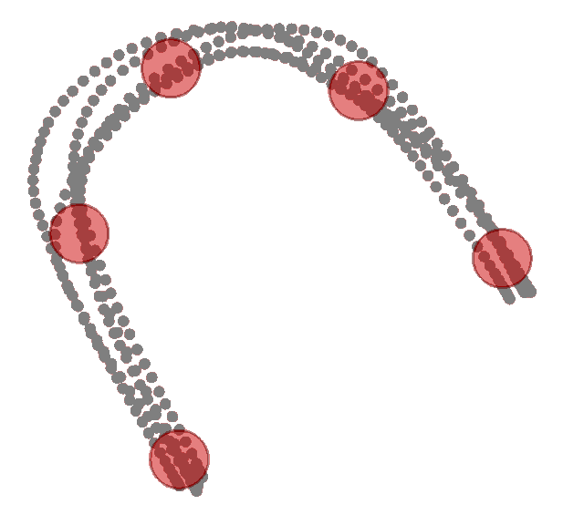

Test Quiz
Question 1
Match the covariance matrix structure with the probability density function within the plots.

(a)
\Sigma_i = \begin{pmatrix} \sigma & 0 \\ 0 & \sigma \end{pmatrix}
(b)
\Sigma_i = \begin{pmatrix} \sigma_{i,1} & 0 \\ 0 & \sigma_{i,2} \end{pmatrix}

(c)
\Sigma_i = \begin{pmatrix} \Sigma_{1,1} & \Sigma_{1,2} \\ \Sigma_{1,2} & \Sigma_{2,2} \end{pmatrix}
(c)
\Sigma_i = \begin{pmatrix} \Sigma_{1,1} & \Sigma_{1,2} \\ \Sigma_{1,2} & \Sigma_{2,2} \end{pmatrix}
(d)
\Sigma_i = \begin{pmatrix} \Sigma_{i,1,1} & \Sigma_{i,1,2} \\ \Sigma_{i,1,2} & \Sigma_{i,2,2} \end{pmatrix}